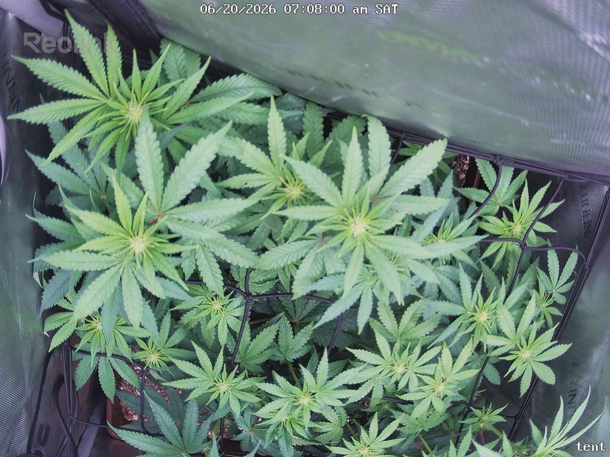

← All reports
Jun 20, 2026
Sat Jun 20, 2026 — 7:07 AM

Prognosis
1. What changed
- Canopy is noticeably flatter and more even across the scrog net vs. yesterday — lateral colas are filling gaps nicely.
- New growth tips are bright, healthy light-green (normal new-growth coloring, not nutrient deficiency).
- Overall leaf density/fullness increased slightly; no wilting or new gaps from defoliation.
2. Stress signs
- No tacoing, bleaching, clawing, or burnt tips visible in either shot.
- No webbing, stippling, or visible pests on any of the upper leaf surfaces in frame.
- No mold, lesions, or discoloration patterns — leaves are uniform deep green with healthy serration.
3. Phase check
- Day 17 since flip to 12/12 (started 6/3) — this is early-to-mid flower stretch. Canopy filling in flat across the scrog screen is exactly what you want at this stage; no stretch concerns, no stall.
- Given the mite scare on 6/9 and three Green Cleaner treatments since, the canopy looks fully recovered — no resumption of stippling visible in this view.
4. Suggested next actions
- No action needed today. Continue current watering cadence (~every 4 days) and keep monitoring leaf undersides during next defoliation pass for any mite resurgence.
- Since it's been ~4 days since last water (6/15... actually 6/16 was minor defoliation, last water 6/15), check soil surface moisture before next feed.
Overall: Plant looks healthy and on-track for week 2-3 of flower — flat, even canopy, no stress or pest signs visible.